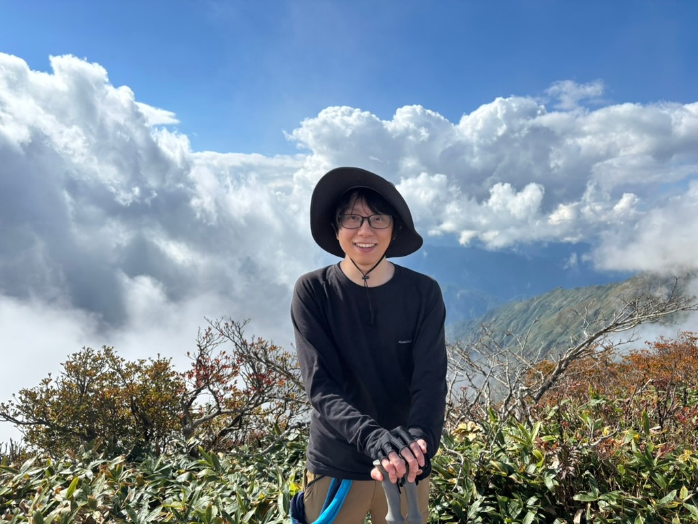

MATHEMATICS
粟津 光Hikaru Awazu
函館工業高等専門学校 一般系 助教（数学）
Assistant Professor of Mathematics, National Institute of Technology (KOSEN), Hakodate College
博士（数理科学）

プロフィール・研究Profile & Research
群や群作用の従順性、離散無限群の諸性質を、Banach環論やC*環論を用いて研究しています。
Study of amenable groups, amenable group actions and other properties of discrete groups using Banach algebras and C*-algebras.
経歴
- 1995年生まれ
- 2018年 東京大学教養学部統合自然科学科 卒業
- 2020年 東京大学大学院数理科学研究科 修士課程修了
- 2026年 東京大学大学院数理科学研究科 博士課程修了
- 現職：函館工業高等専門学校 一般系 助教
修士・博士課程指導教員：河東泰之 教授
論文Preprints
Amenability of group actions on compact spaces and the associated Banach algebras
arXiv:2504.08357On the permanence properties of residually exact groups
東京大学数理科学研究科 修士論文 · arXiv:2512.13212Banach-density comparison for free zero-dimensional amenable actions
ZenodoThe Calkin Algebra as a Test for Nuclearity
公開ページ・検証状況 · Zenodo
発表Selected Talks
Amenability of actions of locally compact groups and Banach algebras
年会案内種々の amenability の Banach環論的側面
研究会サイト · プログラムアブストラクト
群の従順性は、不変平均の存在、固定点性、有界コホモロジーの消滅など、さまざまな観点から特徴づけられる。なかでも Johnson の定理は、局所コンパクト群 G の従順性と畳み込み Banach 環 L¹(G) の従順性が同値であることを述べている。一方、離散群のコンパクト空間への従順作用は、群の exactness と深く結びついており、群自身が従順でない場合にも現れる。
本講演では、離散群 G のコンパクト Hausdorff 空間 X への連続作用を扱い、これに付随する Banach 環 A₀(G,X) を導入する。そして「作用版の Johnsonの定理」は、 A₀(G,X) のある種の従順性として記述できることを見る。また、位相群の作用や、亜群への拡張などの、現在進行中の研究に関しても紹介する。従順性とタイリング, comparison 予想について
研究会サイト · 発表資料（PDF）Amenability of group actions on compact spaces and the associated Banach algebras
Amenability of group actions on compact spaces and the associated Banach algebras
スライドAmenability of group actions and Banach algebras
Amenability of Discrete Group Actions on Compact Hausdorff Spaces and Arising Banach Algebras
計算複雑性理論における MIP=RE* 定理と Connes 埋め込み予想の解決について
群作用の従順性と Banach 環の従順性について
Amenability と群の bounded cohomology
Wedged products of graphs and groups
群のウェッジ和とその表現
C*–環のテンソル積と nuclear pair
授業Teaching
2026年度、1コマ90分
上半期
- 高専1年 基礎数学（週3）
- 高専2年 微分積分（週4）
- 高専4年 微分方程式論（週1）
下半期
- 高専2年 微分積分（週6）
- 高専4年 複素解析論（週1）